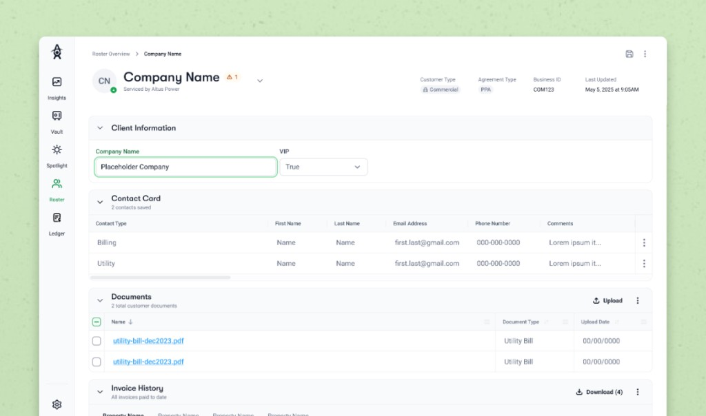

Altus Power · 2025
Commercial Customer Profiles
Supporting transition to in-house B2B billing by consolidating customer data and redesigning invoices so operations could move off fragmented tools without losing reliability.

Context
Altus Power is a clean energy company that provides reliable and effortless transition into renewable energy for households and businesses worldwide.
I designed flows for Roster — a part of support for the team’s transition to in-house billing for hundreds of B2B commercial customers.
Problem
B2B billing lived across disconnected systems and files. Different teams needed one place to see customer information, like accounts, invoices, and data.
- Centralized Unifying billing processes increases reliability in workflow
- Organized Consolidating all info for B2C and B2B customers creates consistency
Insights
Partnered closely with the PM leading transition and the Senior Accountant (primary stakeholder)
- Easy and quick access to customer info
- Each customer can have multiple properties
- Clear document organization
Solutions
I redesigned B2B commercial profiles so teams could manage B2B customers internally and in one place.

For detailed key features, contact me at maryyyliu (at) gmail (dot) com — happy to dive deeper into process for this project.
Reflection
The work supported transition to in-house billing for 450+ B2B customers.
Since much of the design thinking centered on curating and structuring form fields into both existing and new sections, I was able to focus on information architecture and on establishing clear priorities within the profile.
- Ask, not assume what stakeholders want
- Good design is when you can’t take anything away from it